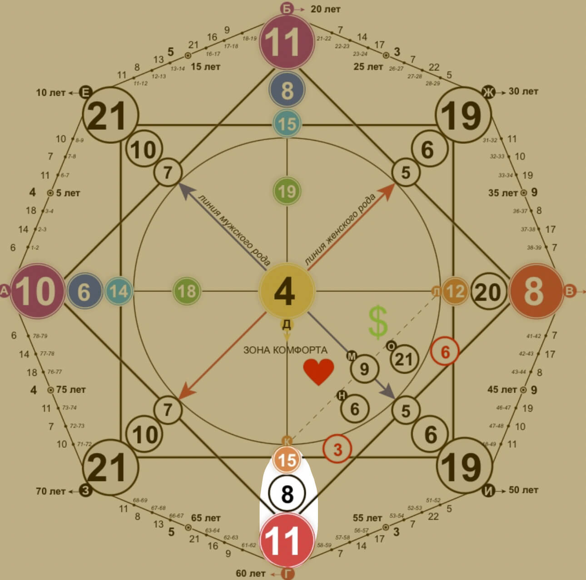

Кармический хвост
Кармический долг (хвост) – это кармический багаж, который человек принес из прошлых жизней. Именно с него стоит начинать работу с матрицей, поскольку эти три энергии образуют фундамент жизни. Это те задачи, которые человек не успел решить в прошлом воплощении, и они будут влиять на нашу реальность.
Часто в кармическом хвосте кроются ответы на причины неудач в той или иной сфере. Эти энергии стоят в первых позициях на линии благополучия (любви и денег). В матрице все связано. Начав проработку кармического долга, вы одновременно проработаете вход в отношения, вход в деньги и главную задачу души в этом воплощении.
Кармический хвост – это три нижние энергии в матрице. Эти энергии изначально даны в минусе и проработку всей матрицы лучше начинать с вывода этих энергий в плюс.
Кармический хвост «Физическая агрессия» 15-8-11
В прошлом воплощении человек бил слабых, применял насилие, физические страдания другим людям. В этом воплощении он сам может попадать под насильственные действия, увечья, физические страдания. Важно избавиться от агрессии, прощать своих обидчиков.
В этой жизни
- может быть физически слабое тело
- по старой памяти человек может провоцировать окружающих на физическое насилие, только в этот раз оно может применяться уже к нему
- в детстве такого ребенка могут часто обижать сверстники, либо даже родители
- насилие в семье (между родителями) и как следствие, у ребенка формируется искаженное понимание семьи и в будущем это будет проецироваться уже в собственной семье
- озлобленность на весь мир
- как только внутри человека закипает ненависть или желание причить боль кому-то – сразу появляются ситуации, в которых боль причиняется ему
ЗАДАЧИ:
- с детства ребенка желательно отдать в силовые секции ,чтобы он учился постоять за себя. Направлять свою внутреннюю агрессию в спорт, прокачку своего тела и духа. Как только он научится перенаправлять эту энергию в мирное русло – его перестанут обижать.
- важно научиться любви, принятию других людей .Если вас обижают – ищите причину в себе, возможно это очередной урок для вас, который надо пройти и не повторять прежних ошибок.
- толерантно относитесь к слабым, защищайте их, а не обижайте. Найдется тот, кто будет сильнее и причинит боль вам.
Урок и рекомендации:
Учитесь быть гибким, толерантным и дипломатичным. Прокачивая свое физическое тело и дух, направляйте это только во благо, не причиняя вред, боль, страдания другим. Избегайте участия в драках, разборках, высок риск причинить увечье другому и понести за это уголовное наказание. Проработайте внутреннюю агрессию, направляйте свою силу на созидание, защиту слабых, помощь другим.